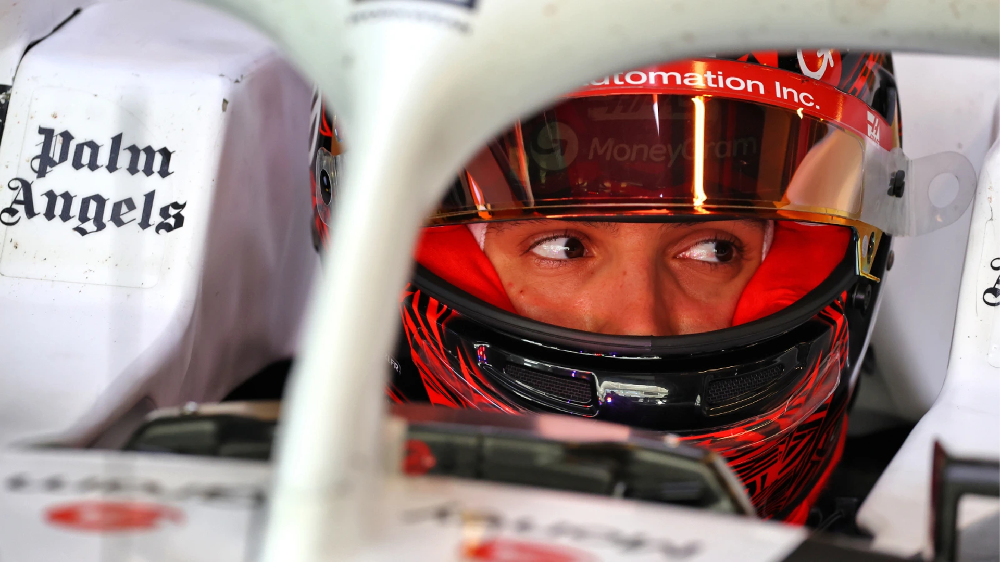

Esteban Ocon
Driver. Car #31
Formula 1 has always attracted people who were willing to sacrifice everything for a shot at the grid. Most of those stories live in the junior categories and go no further. Esteban Ocon's story is different, because the sacrifice wasn't his alone.
Born in Évreux, Normandy in 1996, Ocon grew up watching his father work as a mechanic, surrounded by the smell of engines and the sound of a sport he quickly decided he needed to be part of. When he was old enough to race karts seriously, his family sold their house, put their jobs on hold, and started living out of a caravan, travelling from circuit to circuit across Europe. That kind of commitment doesn't come without pressure. Ocon responded by winning, consistently, against fields that included the future Formula 1 World Champion.
A Career Built the Hard Way
He beat Max Verstappen to the 2014 European Formula 3 title, then won the GP3 championship the following year, and arrived in Formula 1 with Manor in 2016, aged nineteen. The grid doesn't give many people a soft landing, and Ocon's early years were defined by fighting for everything in cars that weren't always capable of what he was. What he built, across stints at Force India and then as a Mercedes reserve driver, was a reputation for racecraft, consistency, and an ability to extract performance from whatever he was given.
He won his first grand prix at the 2021 Hungarian Grand Prix, coming through chaos and strategy calls that would have undone a less composed driver to take one of the more unexpected victories of that season. By the time he signed for TGR Haas ahead of 2025, he had ten years of Formula 1 experience behind him, a race win, four podiums, and nearly 500 championship points.
What He Brings to TGR Haas
Ocon arrived at Haas knowing exactly what he was walking into, and exactly what he wanted from it. He brought pace, experience, and a level of technical feedback that only comes from a driver who has spent a decade understanding what makes a Formula 1 car work. His relationship with Ayao Komatsu goes back further than most people realise, Komatsu was his race engineer during his very first Formula 1 test with Lotus over a decade ago, which gives their working dynamic a foundation of genuine trust.
He is not here to see out a contract. He is here to win races, and to be part of a team that is building toward something worth being part of.
2026
A regulation reset suits a driver of Ocon's experience. When the laptimes are unpredictable and every team is learning in real time, racecraft and composure matter as much as raw pace. He has both, and he knows how to use them.